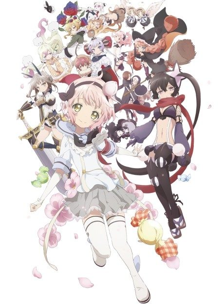
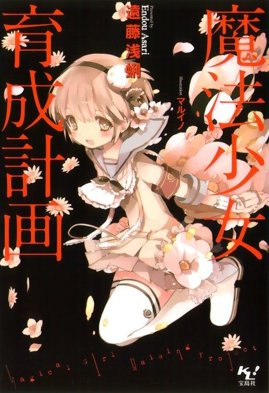

Magical Girl Raising Project
魔法少女育成計画
The anime takes the story to Not checked.
6.6AniList score
—Animeter, no votes yet
15episodes, 2 seasons
2 seasons, 15 episodes
In airing order. Episode numbers on this site count straight through every season, so season 2 starts at episode 13.
1
2016 · TV
Magical Girl Raising Project
Episodes1–1212 ep
2
2026 · TV · Airing
MAGICAL GIRL RAISING PROJECT restart
Episodes13–153 ep so far
Sources: AniList